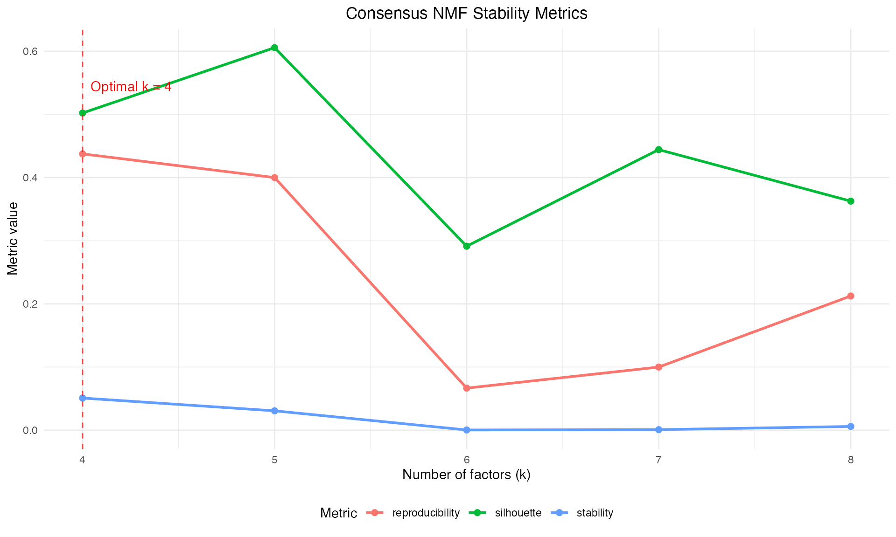
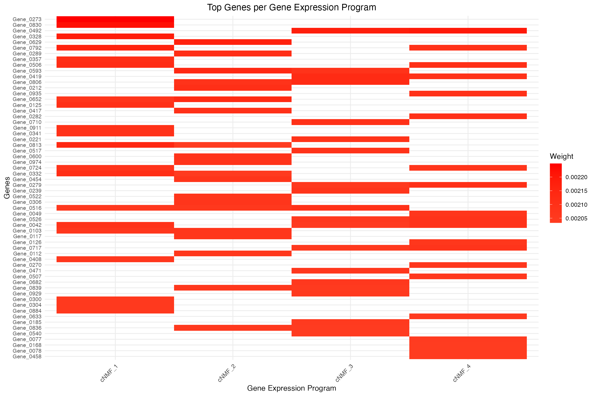
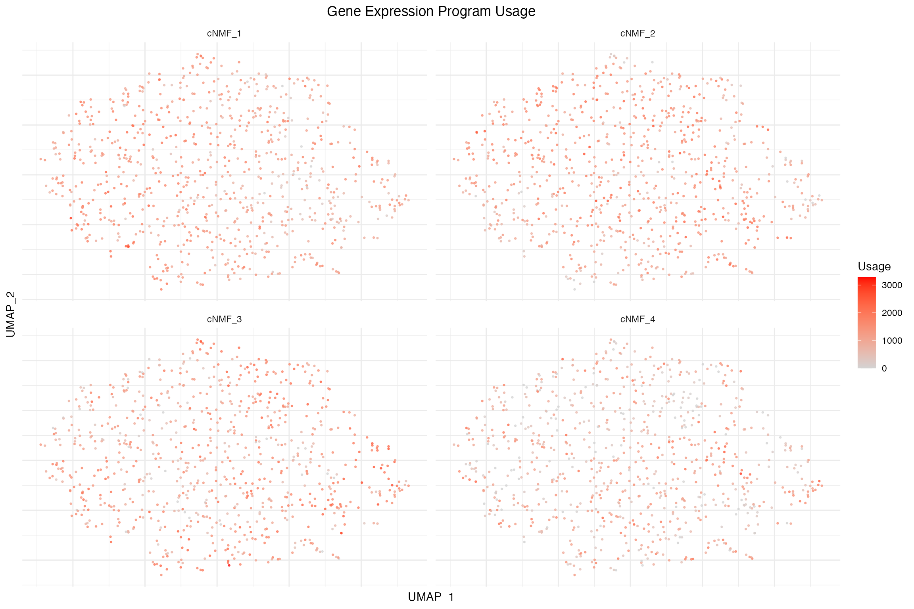

Consensus NMF with BiocNMF
Michael Totty
2025-09-10
Source:vignettes/consensus-nmf.Rmd
consensus-nmf.RmdIntroduction to Consensus NMF
Consensus Non-negative Matrix Factorization (cNMF) addresses a fundamental limitation of standard NMF: instability across random initializations. While standard NMF can produce different results with different random seeds, cNMF provides robust, reproducible gene expression programs through consensus clustering.
The Stability Problem
Standard NMF optimization is non-convex, leading to multiple local optima. This means: - Different random initializations produce different solutions - Gene expression programs may not be reproducible - Optimal k selection becomes challenging - Biological interpretation can be inconsistent
The Consensus Solution
cNMF, developed by Kotliar et al. (eLife 2019), solves this through:
- Multiple NMF runs with different initializations
- Consensus clustering to group similar gene expression programs
- Stability metrics for objective k selection
- Robust final programs through clustering and refitting
The cNMF Algorithm
Step-by-Step Methodology
1. Multiple NMF Factorizations
For each k value, run NMF many times (typically 100-200) with different random initializations:
For k in k_range:
For run in 1:n_runs:
W[k,run], H[k,run] = NMF(X, k, random_seed=run)2. Gene Expression Program Collection
Collect all gene expression programs (columns of W matrices) across runs.
3. Density Filtering
Remove outlier programs using local density estimation: - Calculate pairwise cosine similarities between programs - Compute local density for each program - Filter programs below density threshold - Reduces noise and computational burden
4. Consensus Clustering
Cluster similar programs using k-means: - Apply k-means clustering to filtered programs - Group similar gene expression programs together - Each cluster represents a consensus program
Implementation Details
BiocNMF implements the exact algorithm from Kotliar et al. with these key components:
# Conceptual overview (actual implementation is in C++/optimized R)
runConsensusNMF <- function(x, k_range, n_runs, ...) {
for (k in k_range) {
# 1. Multiple NMF runs
nmf_runs <- replicate(n_runs, RcppML::nmf(data, k = k))
# 2. Collect all programs
all_programs <- do.call(cbind, lapply(nmf_runs, function(r) r$w))
# 3. Density filtering
filtered_programs <- applyDensityFiltering(all_programs)
# 4. Consensus clustering
clusters <- kmeans(t(filtered_programs), centers = k)
# 5. Build consensus matrix
consensus_mat <- buildConsensusMatrix(clusters)
# 6. Calculate stability metrics
stability <- calculateStabilityMetrics(consensus_mat)
}
# Select optimal k and refit
optimal_k <- selectOptimalK(stability_results)
final_programs <- extractConsensusPrograms(optimal_k)
usage_matrix <- refitUsageMatrix(data, final_programs)
}Running Consensus NMF
Basic Usage
# Create example data with more structure for demonstration
set.seed(42)
sce <- mockSCE(ngenes = 1000, ncells = 800)
# Add cell type structure
n_types <- 5
sce$cell_type <- sample(paste0("Type", 1:n_types), ncol(sce), replace = TRUE)
# Normalize
sce <- logNormCounts(sce)
# Add visualization coordinates
sce <- runPCA(sce, ncomponents = 20)
sce <- runUMAP(sce, dimred = "PCA")
# Run consensus NMF
# Note: Using small parameters for vignette speed
# In practice, use n_runs = 100-200 and broader k_range
sce <- runConsensusNMF(sce,
k_range = 4:8, # Test k values
n_runs = 20, # Number of runs per k
n_cores = 1, # Parallel cores
verbose = TRUE)
# Check what was added
names(metadata(sce))
#> [1] "cNMF"
reducedDimNames(sce)
#> [1] "PCA" "UMAP" "cNMF"Parameter Selection
Critical Parameters
k_range: Range of k values to test - Start with biologically expected range - Consider 2-3x expected number of cell types - Broader ranges provide better stability assessment
# For 5 expected cell types, test:
k_range = 3:12 # Conservative range
k_range = 2:15 # Broader explorationn_runs: Number of NMF runs per k value - More runs = better stability estimates - Minimum: 50 runs for reasonable estimates - Recommended: 100-200 runs for publication quality
n_runs = 50 # Quick exploration
n_runs = 100 # Standard analysis
n_runs = 200 # High confidenceAlgorithmic Parameters
density_threshold: Outlier filtering stringency - Higher values = more aggressive filtering - Range: 0.1 (lenient) to 0.8 (strict) - Default: 0.5 (balanced)
n_cores: Parallel processing - Use available cores - 1 for system responsiveness - Scales nearly linearly with core count
sce <- runConsensusNMF(sce,
k_range = 5:15,
n_runs = 100,
density_threshold = 0.4, # Lenient filtering
n_cores = 4, # Parallel processing
seed = 123) # ReproducibilityAccessing and Interpreting Results
Consensus Gene Expression Programs
# Get consensus gene expression programs
consensus_geps <- getConsensusGEPs(sce)
dim(consensus_geps) # genes × programs
#> [1] 1000 4
# Get optimal k selected by algorithm
optimal_k <- getOptimalK(sce)
cat("Optimal k selected:", optimal_k, "\n")
#> Optimal k selected: 4
# Get top genes per program
top_genes <- getTopGEPFeatures(sce, n = 15)
head(top_genes[[1]]) # Top genes for program 1
#> [1] "Gene_0273" "Gene_0830" "Gene_0328" "Gene_0792" "Gene_0813" "Gene_0506"Program Usage
# Get program usage per cell
gep_usage <- getGEPUsage(sce)
dim(gep_usage) # cells × programs
#> [1] 800 4
# Usage is also stored in reducedDims
identical(gep_usage, reducedDim(sce, "cNMF"))
#> [1] TRUEStability Metrics
# Get comprehensive stability metrics
stability <- getStabilityMetrics(sce)
print(stability)
#> k stability silhouette reproducibility cophenetic_correlation
#> 1 4 0.0509493671 0.5022110 0.43750000 1
#> 2 5 0.0307070707 0.6056696 0.40000000 1
#> 3 6 0.0004201681 0.2913393 0.06666667 1
#> 4 7 0.0009249743 0.4442262 0.10000000 1
#> 5 8 0.0059748428 0.3627133 0.21250000 1
# Individual metrics explained:
# - stability: clustering-based stability (higher = more stable)
# - silhouette: silhouette score of consensus clustering
# - reproducibility: how often same programs are recovered
# - cophenetic_correlation: consensus matrix qualityAccessing Different k Values
# Access results for specific k values
available_k <- getAvailableK(sce)
cat("Available k values:", available_k, "\n")
#> Available k values: 4 5 6 7 8
# Get results for k=6 specifically
geps_k6 <- getConsensusGEPs(sce, k = 6)
usage_k6 <- getGEPUsage(sce, k = 6)
dim(geps_k6)
#> [1] 1000 6
dim(usage_k6)
#> [1] 800 6Diagnostic Plots
Stability Assessment
The most important diagnostic is the stability plot for k selection:
# Plot stability metrics across k values
plotStability(sce)
Interpretation: - Stability: Primary metric - choose k at peak or plateau - Silhouette: Quality of consensus clustering - Reproducibility: Consistency across runs - Cophenetic: Consensus matrix block structure
Look for: - Peak in stability curve - High silhouette scores (>0.5) - Stable or increasing reproducibility - High cophenetic correlation
Gene Expression Program Heatmaps
# Plot gene expression programs
plotGEPs(sce, programs = 1:getOptimalK(sce), n_genes = 20)
Interpretation: - Each column = one gene expression program - Each row = one gene (top contributors shown) - Red = high expression, Blue = low expression - Look for distinct, interpretable gene sets
Program Usage Visualization
# Plot program usage on UMAP
plotGEPUsage(sce, programs = 1:min(4, getOptimalK(sce)), reduction = "UMAP")
Interpretation: - Each panel shows usage of one program - Continuous colors = program activity levels - Spatial patterns often reveal biological structures - Look for cell type or state-specific patterns
Advanced Analysis
Manual k Selection
Sometimes you may want to override automatic k selection:
# Get detailed information about all k values
cnmf_info <- getConsensusNMFInfo(sce)
print(cnmf_info)
#> $k_range
#> [1] 4 5 6 7 8
#>
#> $n_runs
#> [1] 20
#>
#> $optimal_k
#> [1] 4
#>
#> $assay_used
#> [1] "logcounts"
#>
#> $subset_row
#> NULL
#>
#> $parameters
#> $parameters$tol
#> [1] 1e-05
#>
#> $parameters$maxit
#> [1] 100
#>
#> $parameters$L1
#> [1] 0 0
#>
#> $parameters$n_cores
#> [1] 1
#>
#>
#> $available_k_values
#> [1] "4" "5" "6" "7" "8"
#>
#> $stability_summary
#> k stability silhouette reproducibility
#> Min. :4 Min. :0.0004202 Min. :0.2913 Min. :0.06667
#> 1st Qu.:5 1st Qu.:0.0009250 1st Qu.:0.3627 1st Qu.:0.10000
#> Median :6 Median :0.0059748 Median :0.4442 Median :0.21250
#> Mean :6 Mean :0.0177953 Mean :0.4412 Mean :0.24333
#> 3rd Qu.:7 3rd Qu.:0.0307071 3rd Qu.:0.5022 3rd Qu.:0.40000
#> Max. :8 Max. :0.0509494 Max. :0.6057 Max. :0.43750
#> cophenetic_correlation
#> Min. :1
#> 1st Qu.:1
#> Median :1
#> Mean :1
#> 3rd Qu.:1
#> Max. :1
#>
#> $call
#> runConsensusNMF(x = sce, k_range = 4:8, n_runs = 20, verbose = TRUE,
#> n_cores = 1)
# Force usage of specific k (e.g., k=6)
# This changes what getConsensusGEPs() returns by default
metadata(sce)$cNMF$cNMF$optimal_k <- 6
# Verify change
cat("New optimal k:", getOptimalK(sce), "\n")
#> New optimal k: 6Program Annotation
# Get top genes for biological annotation
top_genes_detailed <- getTopGEPFeatures(sce, n = 50)
# Example: annotate programs based on top genes
opt_k <- getOptimalK(sce)
program_annotations <- character(opt_k)
for (i in 1:opt_k) {
top_10 <- head(top_genes_detailed[[i]], 10)
program_annotations[i] <- paste0("Program_", i, " (",
paste(head(top_10, 3), collapse = ", "),
"...)")
}
print(program_annotations)
#> [1] "Program_1 (Gene_0830, Gene_0273, Gene_0328...)"
#> [2] "Program_2 (Gene_0830, Gene_0341, Gene_0328...)"
#> [3] "Program_3 (Gene_0830, Gene_0341, Gene_0273...)"
#> [4] "Program_4 (Gene_0112, Gene_0273, Gene_0527...)"
#> [5] "Program_5 (Gene_0830, Gene_0341, Gene_0136...)"
#> [6] "Program_6 (Gene_0830, Gene_0341, Gene_0273...)"Robustness Assessment
# Test robustness with different parameters
sce_alt1 <- runConsensusNMF(sce, k_range = 4:8, n_runs = 50,
density_threshold = 0.3)
sce_alt2 <- runConsensusNMF(sce, k_range = 4:8, n_runs = 50,
density_threshold = 0.7)
# Compare optimal k selections
c(original = getOptimalK(sce),
lenient = getOptimalK(sce_alt1),
strict = getOptimalK(sce_alt2))Computational Considerations
Performance Scaling
cNMF is computationally intensive. Runtime scales with:
- n_runs: Linear scaling (100 runs = 2x time vs 50 runs)
- k_range: Linear scaling (each k adds ~n_runs time)
- Data size: Quadratic in min(genes, cells)
- n_cores: Near-linear speedup with parallelization
Memory Requirements
Memory usage depends on: - Storing all intermediate NMF results - Consensus matrix construction - Peak usage during clustering steps
For large datasets (>50k cells), consider: - Reducing n_runs (minimum 50) - Narrower k_range based on prior knowledge - Using high-memory computing environments
Optimization Tips
# For large datasets
sce <- runConsensusNMF(sce,
k_range = 8:12, # Focused range
n_runs = 75, # Reduced runs
n_cores = 8, # Max parallelization
density_threshold = 0.6) # Aggressive filtering
# For exploration with quick turnaround
sce <- runConsensusNMF(sce,
k_range = 5:10,
n_runs = 25, # Very fast
n_cores = 4)Integration with Downstream Analysis
Cell Type Assignment
# Assign cells to dominant programs
usage_matrix <- getGEPUsage(sce)
dominant_programs <- apply(usage_matrix, 1, which.max)
# Add to cell metadata
colData(sce)$dominant_program <- paste0("Program_", dominant_programs)
# Compare with original cell types (if available)
table(colData(sce)$dominant_program, colData(sce)$cell_type)
#>
#> Type1 Type2 Type3 Type4 Type5
#> Program_1 38 34 38 38 37
#> Program_2 49 47 52 51 59
#> Program_3 42 47 56 49 52
#> Program_4 27 24 19 23 18Differential Program Usage
# Test for differential program usage between conditions
library(scran)
# Example: differential usage between cell types
colData(sce)$program_1_usage <- usage_matrix[, 1]
# Statistical testing
results <- findMarkers(sce,
groups = sce$cell_type,
test.type = "t")Gene Set Enrichment
# Example pathway enrichment (requires additional packages)
library(clusterProfiler)
library(org.Hs.eg.db)
# Get top genes for program 1
program_1_genes <- getTopGEPFeatures(sce, n = 100)[[1]]
# Run enrichment analysis
enrichment <- enrichGO(gene = program_1_genes,
OrgDb = org.Hs.eg.db,
ont = "BP",
readable = TRUE)Best Practices
Parameter Selection Guidelines
- Start broad: Use wide k_range for initial exploration
- Sufficient runs: Minimum 50 runs, prefer 100+ for final analysis
- Multiple thresholds: Test different density_threshold values
- Reproducibility: Use set.seed() for reproducible results
Comparison with Standard NMF
# Run standard NMF with same k
opt_k <- getOptimalK(sce)
sce <- runNMF(sce, k = opt_k, name = "StandardNMF")
# Compare stability by running multiple times
set.seed(123)
nmf_runs <- replicate(10, {
sce_temp <- runNMF(sce, k = opt_k, verbose = FALSE)
getBasis(sce_temp)[, 1] # First program
}, simplify = FALSE)
# Calculate coefficient of variation across runs
cv_standard <- apply(do.call(cbind, nmf_runs), 1, function(x) sd(x)/mean(x))
# Compare with cNMF stability (programs should be more stable)
cnmf_program_1 <- getConsensusGEPs(sce)[, 1]
cat("Standard NMF variability (mean CV):", round(mean(cv_standard, na.rm = TRUE), 3), "\n")
cat("cNMF provides stable programs across runs\n")Session Information
sessionInfo()
#> R version 4.4.3 Patched (2025-02-28 r87922)
#> Platform: aarch64-apple-darwin20
#> Running under: macOS Sequoia 15.6.1
#>
#> Matrix products: default
#> BLAS: /Library/Frameworks/R.framework/Versions/4.4-arm64/Resources/lib/libRblas.0.dylib
#> LAPACK: /Library/Frameworks/R.framework/Versions/4.4-arm64/Resources/lib/libRlapack.dylib; LAPACK version 3.12.0
#>
#> locale:
#> [1] en_US.UTF-8/en_US.UTF-8/en_US.UTF-8/C/en_US.UTF-8/en_US.UTF-8
#>
#> time zone: America/New_York
#> tzcode source: internal
#>
#> attached base packages:
#> [1] stats4 stats graphics grDevices utils datasets methods
#> [8] base
#>
#> other attached packages:
#> [1] scran_1.34.0 pheatmap_1.0.12
#> [3] scater_1.34.1 ggplot2_3.5.1
#> [5] scuttle_1.16.0 BiocNMF_0.99.0
#> [7] SingleCellExperiment_1.28.1 SummarizedExperiment_1.36.0
#> [9] Biobase_2.66.0 GenomicRanges_1.58.0
#> [11] GenomeInfoDb_1.42.3 IRanges_2.40.1
#> [13] S4Vectors_0.44.0 MatrixGenerics_1.18.1
#> [15] matrixStats_1.5.0 BiocGenerics_0.52.0
#> [17] BiocStyle_2.34.0
#>
#> loaded via a namespace (and not attached):
#> [1] gridExtra_2.3 rlang_1.1.5 magrittr_2.0.3
#> [4] compiler_4.4.3 systemfonts_1.2.1 vctrs_0.6.5
#> [7] pkgconfig_2.0.3 crayon_1.5.3 fastmap_1.2.0
#> [10] XVector_0.46.0 labeling_0.4.3 rmarkdown_2.29
#> [13] UCSC.utils_1.2.0 ggbeeswarm_0.7.2 ragg_1.5.0
#> [16] xfun_0.51 bluster_1.16.0 zlibbioc_1.52.0
#> [19] cachem_1.1.0 beachmat_2.22.0 jsonlite_1.9.1
#> [22] DelayedArray_0.32.0 BiocParallel_1.40.0 irlba_2.3.5.1
#> [25] parallel_4.4.3 cluster_2.1.8.1 R6_2.6.1
#> [28] bslib_0.9.0 RColorBrewer_1.1-3 limma_3.62.2
#> [31] jquerylib_0.1.4 Rcpp_1.0.14 bookdown_0.42
#> [34] knitr_1.49 FNN_1.1.4.1 Matrix_1.7-3
#> [37] igraph_2.1.4 tidyselect_1.2.1 abind_1.4-8
#> [40] yaml_2.3.10 viridis_0.6.5 codetools_0.2-20
#> [43] lattice_0.22-6 tibble_3.2.1 withr_3.0.2
#> [46] evaluate_1.0.3 desc_1.4.3 pillar_1.10.1
#> [49] BiocManager_1.30.25 generics_0.1.3 munsell_0.5.1
#> [52] scales_1.3.0 glue_1.8.0 metapod_1.14.0
#> [55] tools_4.4.3 BiocNeighbors_2.0.1 ScaledMatrix_1.14.0
#> [58] locfit_1.5-9.12 RcppML_0.3.7 fs_1.6.5
#> [61] grid_4.4.3 edgeR_4.4.2 colorspace_2.1-1
#> [64] GenomeInfoDbData_1.2.13 beeswarm_0.4.0 BiocSingular_1.22.0
#> [67] vipor_0.4.7 cli_3.6.4 rsvd_1.0.5
#> [70] textshaping_1.0.0 S4Arrays_1.6.0 viridisLite_0.4.2
#> [73] dplyr_1.1.4 uwot_0.2.3 gtable_0.3.6
#> [76] sass_0.4.9 digest_0.6.37 SparseArray_1.6.2
#> [79] ggrepel_0.9.6 dqrng_0.4.1 htmlwidgets_1.6.4
#> [82] farver_2.1.2 htmltools_0.5.8.1 pkgdown_2.1.3
#> [85] lifecycle_1.0.4 httr_1.4.7 statmod_1.5.0References
Kotliar D, Veres A, Nagy MA, et al. Identifying gene expression programs of cell-type identity and cellular activity with single-cell RNA-Seq. eLife. 2019;8:e43803.
DeBruine ZJ, Melcher K, Triche TJ. High-performance non-negative matrix factorization for large single cell data. bioRxiv. 2021.
Lee DD, Seung HS. Learning the parts of objects by non-negative matrix factorization. Nature. 1999;401(6755):788-791.